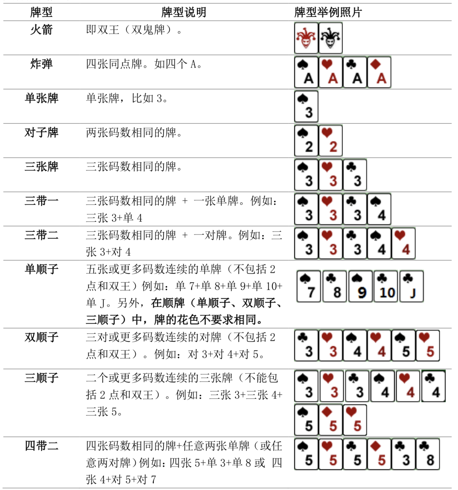
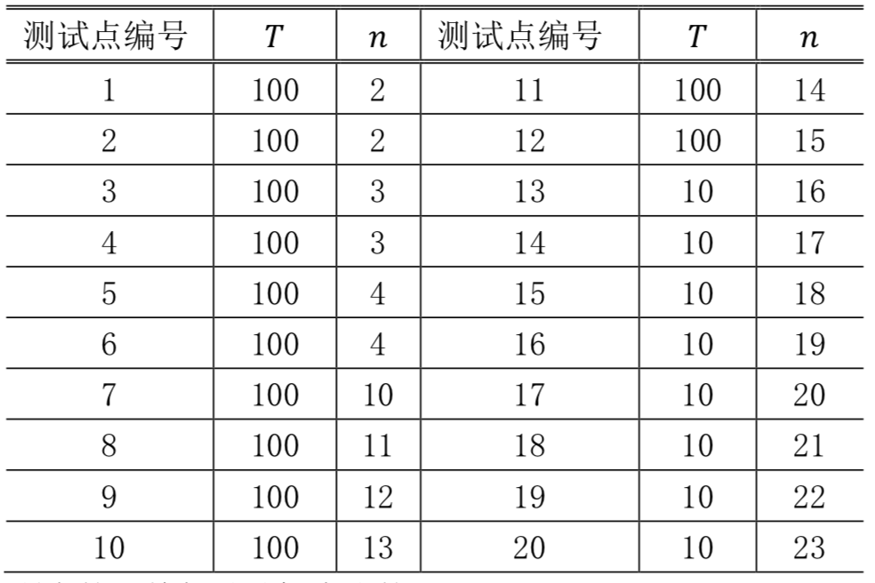

牛牛最近迷上了一种叫斗地主的扑克游戏。斗地主是一种使用黑桃、红心、梅花、方片的 A 到 K 加上大小王的共 54 张牌来进行的扑克牌游戏。在斗地主中，牌的大小关系根据牌的数码表示如下：3<4<5<6<7<8<9<10<J<Q<K<A<2<小王<大王，而花色并不对牌的大小产生影响。每一局游戏中，一副手牌由 $n$ 张牌组成。游戏者每次可以根据规定的牌型进行出牌，首先打光自己的手牌一方取得游戏的胜利。
现在，牛牛只想知道，对于自己的若干组手牌，分别最少需要多少次出牌可以将它们打光。请你帮他解决这个问题。
需要注意的是，本题中游戏者每次可以出手的牌型与一般的斗地主相似而略有不同。具体规则如下：

第一行包含用空格隔开的 $2$ 个正整数 $𝑇, 𝑛$，表示手牌的组数以及每组手牌的张数。
接下来 $𝑇$ 组数据，每组数据 $𝑛$ 行，每行一个非负整数对 $𝑎_𝑖, 𝑏_𝑖$，表示一张牌，其中 $𝑎_𝑖$ 表示牌的数码，$𝑏_𝑖$ 表示牌的花色，中间用空格隔开。特别的，我们用 $1$ 来表示数码 A，$11$ 表示数码 J，$12$表示数码 Q，$13$ 表示数码 K；黑桃、红心、梅花、方片分别用 $1-4$ 来表示；小王的表示方法为 0 1，大王的表示方法为 0 2。
共 $T$ 行，每行一个整数，表示打光第 $𝑖$ 组手牌的最少次数。
1 8 7 4 8 4 9 1 10 4 11 1 5 1 1 4 1 1
3
1 17 12 3 4 3 2 3 5 4 10 2 3 3 12 2 0 1 1 3 10 1 6 2 12 1 11 3 5 2 12 4 2 2 7 2
6
【样例 1 说明】
共有 $1$ 组手牌，包含 $8$ 张牌：方片7，方片8，黑桃9，方片10，黑桃J，黑桃5，方片A 以及黑桃A。可以通过打单顺子（方片7，方片8，黑桃9，方片10，黑桃J），单张牌（黑桃5）以及对子牌（黑桃A 以及 方片A）在 $3$ 次内打光。
【数据规模与约定】
对于不同的测试点，我们约定手牌组数 $𝑇$ 与张数 $𝑛$ 的规模如下：

数据保证：所有的手牌都是随机生成的。
 Comet OJ
Comet OJ